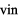

文字と発音 発音（子音）
●デンマーク語の子音
デンマーク語の子音は，日本語と比べて，その数が母音のように特に多いわけではありません．しかし，以下の説明にあるようにいくつか特徴的な発音があります．
デンマーク語の子音表に挙げられている各子音に付けられている V をクリックすると，当該子音を含む単語が３つ発音されます．
発音する口の動き方を確認しながら，皆さんも発音してみましょう．
・ だけでなく， もどちらも無声音であることに注意してください．両者の違いは，英語や日本語のように「有声／無声」にあるのではなく， が強い気息を伴う，いわゆる帯気音であるのに対し， はそのような気息は伴わないという点にあります．つまり，日本語の「バ，ダ，ガ」をそのままデンマーク語の に対応させて発音すると，それはデンマーク語音には聞こえにくいことになります．このデンマーク語の の正確な発音をマスターすることは難しいですが， を発音する際に日本語の「パ，タ，カ」の子音をなるべく弱く発音するとよいでしょう．
・ そして は英語やドイツ語などで対応する音だと考えてください．
・ は「シャ，シュ，ショ」の子音と似た音です．
・ は「ヤ，ユ，ヨ」の子音と同じだと考えてください．
・ はパリなどのフランス語のr音とほぼ同じです．
・ は英語のthe, thatなどのthの子音に似ていますが，舌を歯の間に挟むのではなく，（上の）歯茎に軽く触れされるようにして発音します．
は英語のthe, thatなどのthの子音に似ていますが，舌を歯の間に挟むのではなく，（上の）歯茎に軽く触れされるようにして発音します．
・ は母音に近い音です． は二重母音 「アイ」や 「オイ」の「イ」の部分に相当する音です。 は 母音 をあまり口を緊張させず，短く発音したものと考えてください． は 母音 や をあまり口を緊張させずに発音したものと考えてください． は例えばfirma「会社」「フィアマ」のように短い「ア」のように聞こえる音です。母音 や を短く発音したものと考えてください．
●声門せばめ音
「声門せばめ音 (stød)」について
デンマーク語には子音の一種とも考えられる声門せばめ音があります．これは声門をせばめ，息を出すのを一瞬おくらせるようにした結果できる音です．これはデンマーク語ではstød
「突き音」と呼ばれ，長母音の後，
例 ：
または短母音後の の後にしか現われません．
例 ：
このstødの有無で意味が変わってくるので，重要な要素と言えます．例えば，læser という単語は，stødを伴わずに
と発音すると「読者」という意味を表すのに対してstødを伴って
と発音すると「読む」という意味の動詞 læse の現在形を表します．
stødはこのように確かに重要な要素ではありますが，stødの有無に関する複雑な規則を，外国人は音声学者でもないかぎり，マスターすることは不可能です．いいえ，外国人だけではありません，デンマーク人自身も出身地によってはstødのない方言を話す人や，標準語とは違ったところにstødが現われる方言を話す人もいますので，そういったデンマーク人にとっても標準語のstødをマスターすることは困難なことであると言えます．
したがって，外国人である私たちはstødというものが存在することは十分認識しておく必要はあるものの，こだわっていてはデンマーク語が上達できないでしょうから，それほどまでにこだわる必要はないだろうと思われます．日本語でもstødとは異なる現象ではありますが，高低アクセントによって単語の意味を区別しています．例えば，"箸"は東京周辺では（高い・低い）（￣＿）のアクセントであるのに対し，"橋"は（低い・高い）（＿￣）のアクセントですが，大阪周辺ではその逆で，"箸"（＿￣），"橋"（￣＿）です．大阪大学外国語学部の学生食堂で東京出身の学生が"箸"を取ってくれるように頼むときに， "は"を高く，"し"を低く（￣＿）と言ったとすると関西出身の学生には"橋"を取ってくれと言われたと聞こえるのですが，その関西出身の学生はちゃんと"箸"を取ってくれるはずです．同様に，私たち日本人がデンマーク語で「それらの町には」という文脈において，「それらの町」に対応する語 byerne を発音しようとしたとします．byerneは，本来ならstødを伴って，
と発音されますが，これを
とstød無しで言ったとしても，誰もその文脈では，このstød無しの発音 が意味するところの"にわか雨"bygerneの話をしているとは思わないで，byerne 「それらの町」のことを言っているだろうと理解してくれるにちがいありません．